| 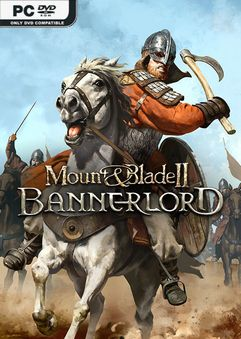 | 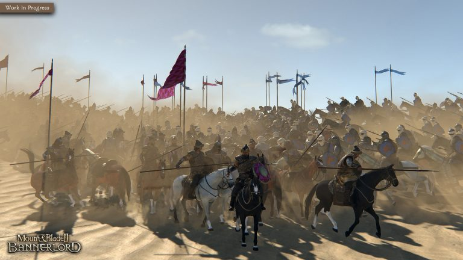 | 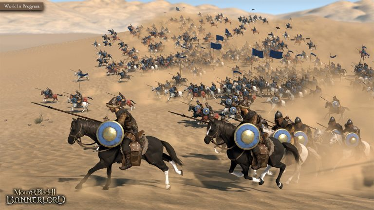 | 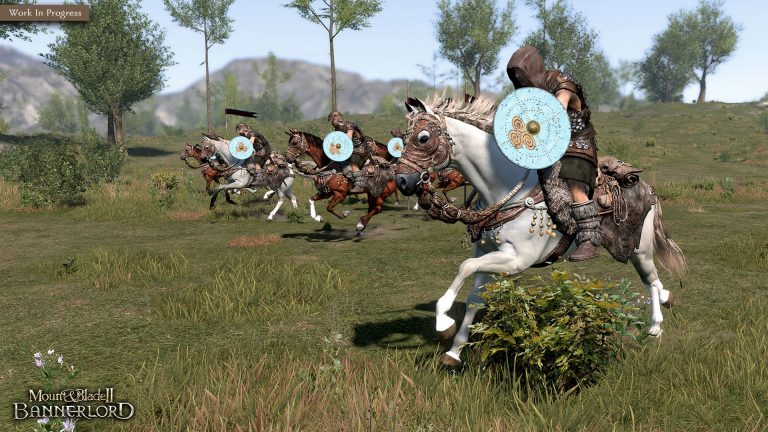 | 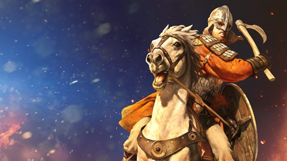 | 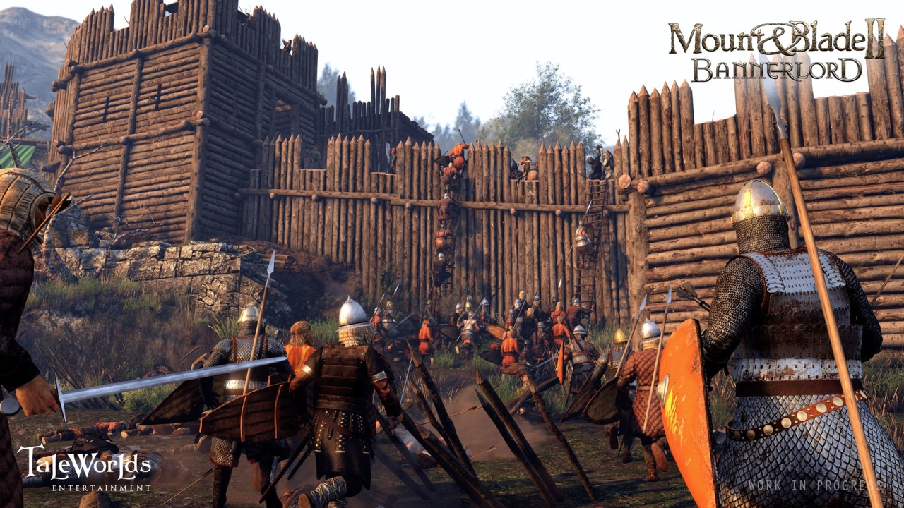 |
Mount & Blade II: Bannerlord, orta çağ savaş simülasyon ve rol-yapma oyunu olan Mount & Blade: Warband’in heyecanla beklenen devamı niteliğindedir. 200 yıl öncesinde geçen, detaylı dövüş sistemini ve Kalradya dünyasını daha kapsamlı ele alır. Dağlardaki sığınakları talan edin, şehirlerin arka sokaklarında gizli suç imparatorlukları kurun ya da güç mücadelenizde savaş keşmekeşinin içine atılın.
Tür: Aksiyon, Macera, Oyun, RPG, Simulasyon, Türkçe Oyunlar, Yıldız Oyunlar
Platform: PC
Boyut: 49 GB
Crack: v1.2.10.42197
Tarih: 25 Ekim 2022
Kaynak: Torrentoyunindir.com
Dil: Türkçe!
 |
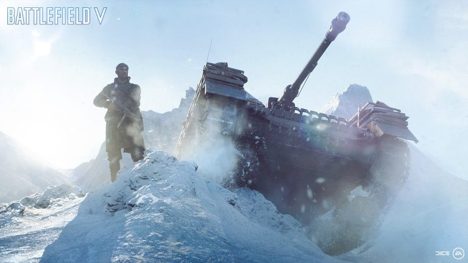 | 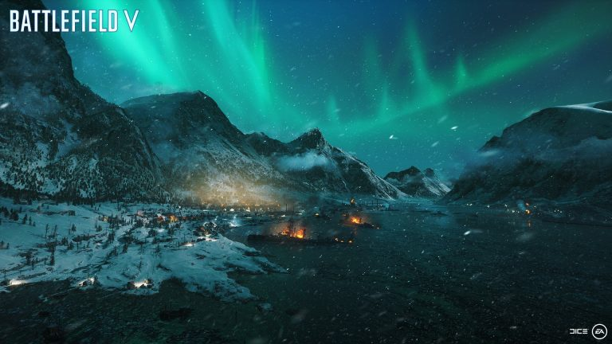 | 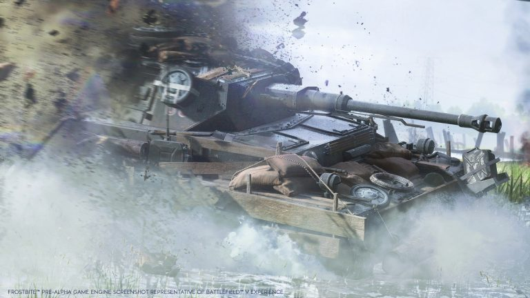 |
Sadece Battlefield’da düşmanınıza siper sağlayan binaları yıkarak yok edebilirsiniz. Bir hücum botuna binerek saldırıya öncülük etmeyi, yalnızca Battlefield’da gerçekleştirebilirsiniz. Battlefield size güçlü yönlerinizi ön plana çıkarmanız ve zafere giden yolu kendiniz çizmeniz fırsatı vermek için daha fazlasını yapma ve daha fazlası olma özgürlüğünü sunacak.
Tür: Aksiyon, Yıldız Oyunlar
Platform: PC
Boyut: 23.0 GB
Crack: RELOADED
Tarih: 29-10-2013
Kaynak: Zamunda
Dil: İngilizce
| 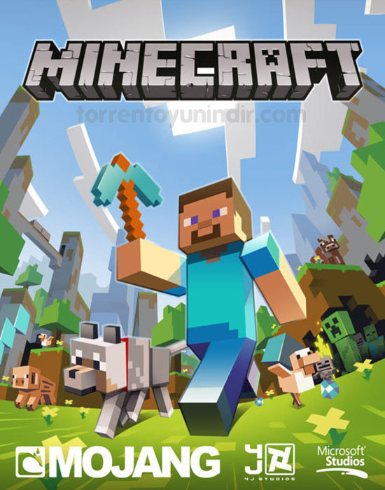 | 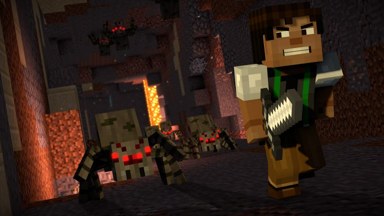 | 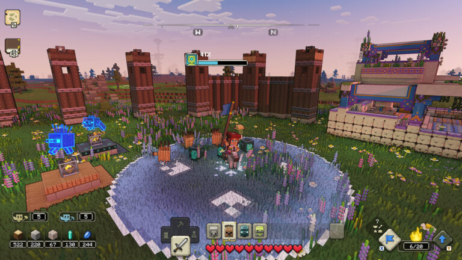 | 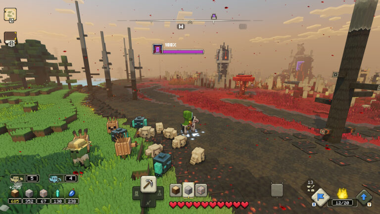 | 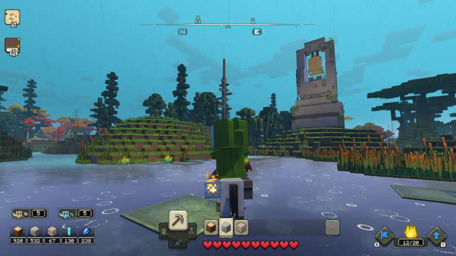 |
Sevgili oyun severler işte karşınızda Minecraft!!! Sevgi dolu dünyasıyla şirin domuzlar, tatlı inekler ve güzel çiçekler aynı zamanda korkulu maden dünyasında iskeletler, zombiler, creeperlar ve çok daha fazlası sizlerle. Hayal dünyanızı yaşatmanın tam sırası...
Tür: Aksiyon, Oyun, Strateji, Yıldız Oyunlar
Platform: PC
Boyut: 221.6 MB
Crack: 1.15.2
Tarih: 2011
Kaynak: Zamunda
Dil: İngilizce
| 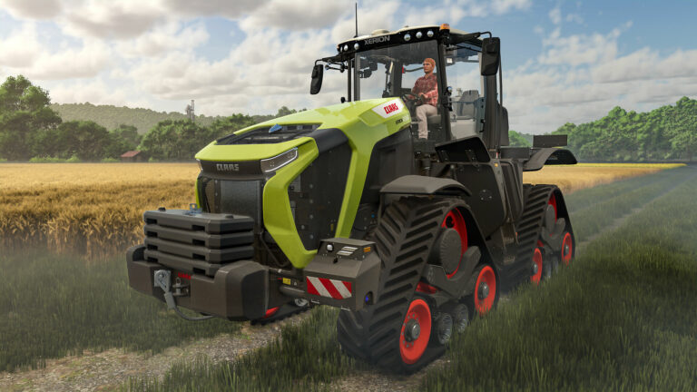 | 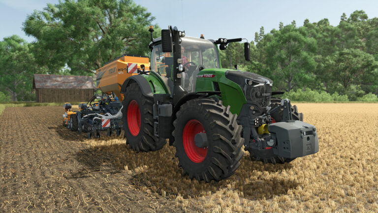 | 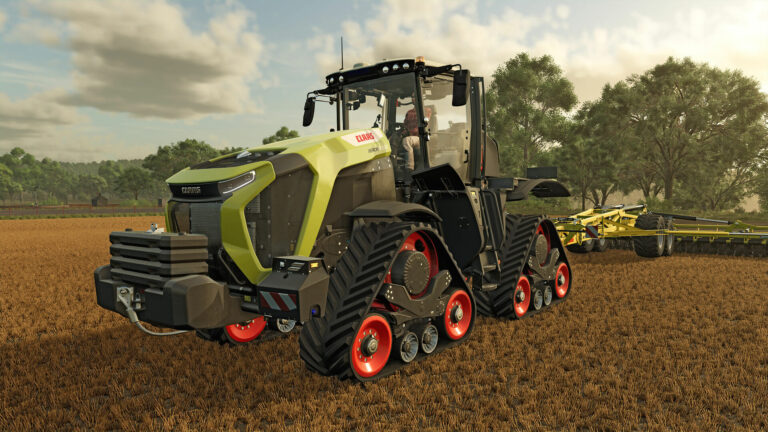 | 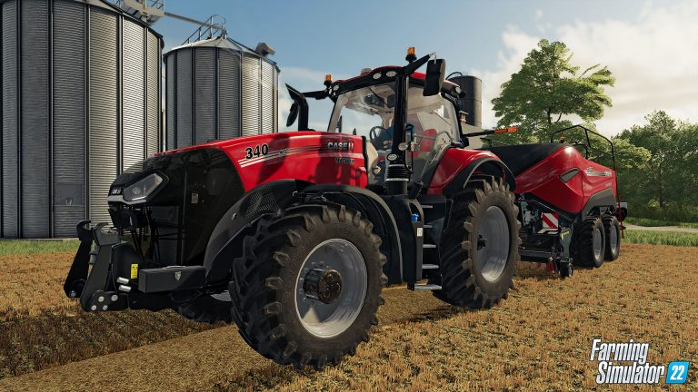 |
Farming Simulator 25 seni müthiş çiftlik yaşantısına davet ediyor. Tarım imparatorluğunu ister tek başına kur istersen de çok oyunculu modda eşli oyna; çiftlik senin, seçim senin! Bu Senin Çiftliğin! Kuzey Amerika’nın dolambaçlı nehirleri ve tarihi tahıl ambarlarının arasında, Orta Avrupa’da göletlerle çevrili bir bölgede ya da Doğu Asya’nın neon ışıklarla aydınlatılmış liman şehrinin yakınlarındaki yemyeşil pirinç tarlalarında bir çiftlik kur. Ekin yetiştir; hayvanlara bak; ormancılığa atıl ve çiftlik mağazaları, üretim ve inşaat gibi iş girişimlerinin olduğu bir imparatorluğu yönet!
Tür: Oyun, Simulasyon, Türkçe Oyunlar, Yıldız Oyunlar
Platform: PC
Boyut: 22.3 GB
Crack: P2P
Tarih: 12 Kasım 2024
Dil: Türkçe
| 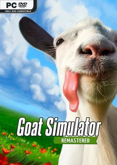 | 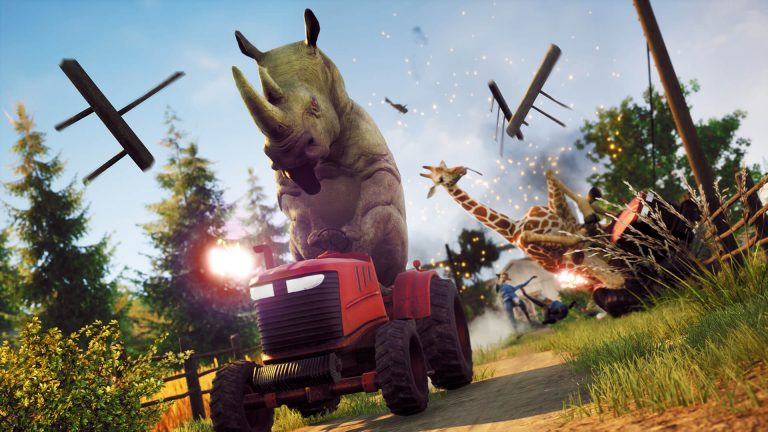 | 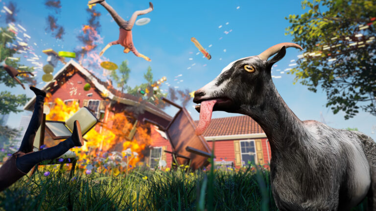 | 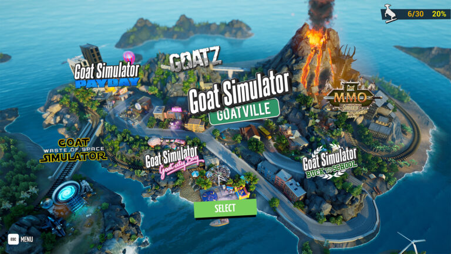 | 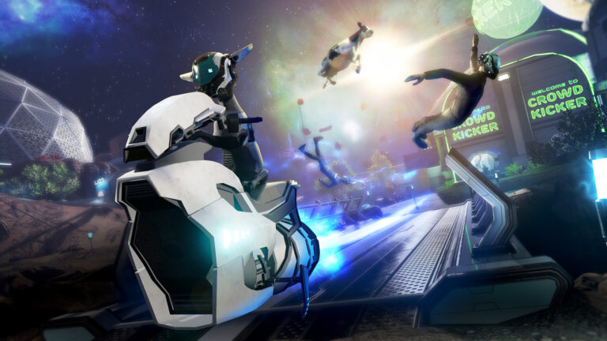 |
Goat Simulator Remastered, keçi simülasyon teknolojisinin geldiği son noktadır. En sevdiğin kaos dolu sandbox oyunu geri döndü ve güncellenmiş grafikleri, tüm DLC’leri içermesi ve keçinin belaya bulaşabileceği bir dolu hata ile eskisinden de güzel bir hale geldi. WASD’ye bas ve tarihi yeniden yaz.
Tür: Oyun, Aksiyon, Basit Eğlence, Macera
Platform: PC
Boyut: 12 GB
Crack: RUNE
Tarih: 7 Kasım 2024
Dil: İngilizce
| 1 | 2 | 3 | 4 |
2024 yılı Ekim ayında, oyun satışları %3 oranında bir artış gösterdi. Bu artış özellikle PC ve konsol oyunlarında belirgin olurken, mobil oyunlar önceki aylara kıyasla düşüş gösterdi. Bu artışın ardındaki nedenler arasında popüler oyunların yeni sürümlerinin çıkışı, tatil sezonuna hazırlık ve büyük çaplı oyun etkinliklerinin etkisi önemli olmuştur. Konsol ve PC oyunlarının yüksek satış performansı, güçlü içerik güncellemeleri ve geniş çaplı pazarlama kampanyaları gibi faktörlerde satışı artıran etkenler arasında sayılabilir...
Haberin devamı için tıklayın.Rockstar Store, Epic Games ve Steam üzerinden oluşturulabilecek ön siparişlerin ne zaman başlayacağı önümüzdeki günlerde belli olacak. Red Dead Redemption ve ek paketi Undead Nightmare için PC sistem gereksinimlerini aşağıdaki tabloda inceleyebilirsiniz...
Haberin devamı için tıklayın.GeForce NOW powered by GAME+, NVIDIA’nın bulut tabanlı oyun stream hizmetidir ve doğrudan bulut üzerinden cihazına gerçek zamanlı oyun deneyimi sunar. Desteklenen oyunlar için bulut kayıtlarıyla, nerede olursan ol, oyununu kaldığın yerden, desteklenen herhangi bir cihazda devam ettirebilirsiniz ve GAME+ ayrıcalığı ile Türkiye'ye özel GeForce NOW sunucularından ulaşabilirsiniz. Yeni başlayanlar için oynaması ücretsiz bir planı da bulunuyor. Kütüphane de bulunan ücretsiz oyunları oynayabilir ve Steam, Epic Games Store’da kendi hesabınızdaki oyunlarınıza bulut erişimi sağlayabilirsiniz. Bazı stüdyolar oyunlarını Geforce Now kullanımına kapatmış olsalar da yinede oynayabileceğiniz binlerce oyun var. GeForce Now’ı ücretsiz olarak kullanmak mümkün ancak bazı kısıtlamalar mevcut. Sisteme yoğun talep olduğunda sıra beklemenin yanı sıra seansların bir saat ile sınırlandırılması oyun keyfini baltalıyor. Ücretli üyelik seçeneği olan Founders sayesinde hem bu sınırlar ortadan kalkıyor, hem de destekleyen oyunlar için NVIDIA’nın RTX teknolojisi aktif hale geliyor...
Haberin devamı için tıklayın.| Telegram |